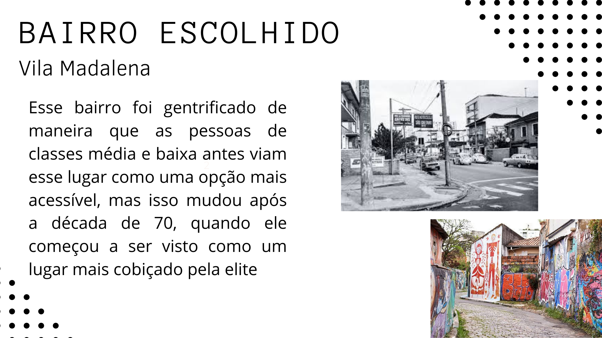

Geografia
Tarefas favoritas do aluno durante o ensino médio

Aqui temos a atividade de Geografia, onde eu tive que escolher um bairro Gentrificado e falar sobre ele e o processo de gentificação dele.